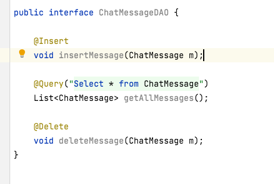

Typically we use a DAO to take care of inserting, updating, creating and deleting. We will then need a Data Access Object, which is responsible for running the sql commands. So far, we will only want to
So create a Java Interface (not a class) called ChatMessageDAO.java and we will implement the necessary functions. First, write the function
This function will insert a ChatMessage object and then return the newly created ID as a long. Then just add the
annotation above the function and the Room library will take care of the SQL syntax for inserting a ChatMessage into the database.
For getting all the messages, Room can run an SQL query and return a List<?> object and all you have to do is specify the Generics parameter, which in our case is ChatMessage. So add this function to your interface:
Instead of writing the java code, you just have to specify the SQL query in an @Query("") annotation. Room uses the object's class name as the table name, so here we write "Select * from ChatMessage"
The deletion function is the easiest one to implement. Declare the function
and just add the @Delete annotation. Room will fill in the code for deletion in SQL. It is very important that you create the @PrimaryKey int id; variable since Room will use this for matching rows to delete. Lastly, put the annotation @Dao above the interface to specify that this is the Data Access Object for Room. Once you are finished, your code should look like this, but with the @Dao annotation above:

The last step is to create the database itself on the disk of the phone or tablet. Create an Abstract class in Java called MessageDatabase.java. Make sure you declare that this class is abstract, and it should extend RoomDatabase to inherit the necessary functions. This class should just have one abstract function which returns the DAO for interacting with this database. For us, that's ChatMessageDAO. So write this abstract function: public abstract ChatMessageDao cmDAO();.
Then above the class declaration, use the annotation @Database(entities = {ChatMessage.class}, version = 1)
@Database(entities = {ChatMessage.class}, version=1)
public abstract class MessageDatabase extends RoomDatabase {
public abstract ChatMessageDAO cmDAO();
}
This tells Room that this Database class is meant for storing ChatMessage objects, and uses the ChatMessageDAO class for querying data. The version parameter is used in case you ever need to change the structure of the ChatMessage class. Let's say you add or remove a variable, then you will need to add or remove a column in the database table. To make the database rebuild itself, just increment the version number by one.
Now in your ChatRoom class, use this code in onCreate() to open a database:
MessageDatabase db = Room.databaseBuilder(getApplicationContext(), MessageDatabase.class, "database-name").build();
mDAO = db.cmDAO();
You are not allowed to run a database query on the main GUI thread, since it might take some time to execute the query and the GUI might not respond to user touches. This means that you should run the query in a separate thread like this:
Executor thread = Executors.newSingleThreadExecutor();
thread.execute({ /*this runs in another thread*/ });
The execute() function calls the run() function of a Runnable on another thread. This is where you should run your database query and add all of the objects returned to your messages ArrayList:
Executor thread = Executors.newSingleThreadExecutor();
thread.execute({ /*this runs in another thread*/ });
You can the add all the messages from the database to your ArrayList of chat messages in the onCreate() function. However you should only set the adapter for recyclerView inside the execute() function, so that the RecyclerView show the data after the database has loaded it:
if(messages == null)
{
chatModel.messages.setValue(messages = new ArrayList<>());
Executor thread = Executors.newSingleThreadExecutor();
thread.execute(() ->
{
messages.addAll( mDAO.getAllMessages() ); //Once you get the data from database
runOnUiThread( () -> binding.recycleView.setAdapter( myAdapter )); //You can then load the RecyclerView
});
}
The ChatMessageDAO object will let you:
You could even write your own @Query function that returns only elements from the database that match a specific query string. Your function could even take parameters and use them in the @Query string.
For your lab, modify the Send and Receive click handlers so that you insert the new ChatMessage object into the database in addition to adding it to your messages ArrayList.